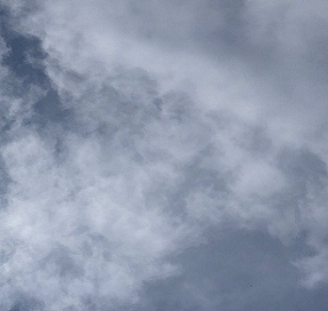

This is how text looks like with a tertiary color!
The image above creates a monochromatic color scheme. This is because all rgb values make the same color blue, but with different shades. The theme for my original website was Rockets. Rockets remind me of the sky, and the peaceful serenity of space. I show the viewer this by adding like colors. Blue represents the emotions and words cerebral, passivity, and calm which accurately represent my goal and vision in color schemes (Cerebral: Rocket science takes a lot of math, and diversity of knowledge in fields, and complex thinking and much more. Passivity and Calm: Space is beauitful and peaceful unlike the loud and chaotic Earth). I use these colors to make the webpage viewer feel the enormity and awesomeness of rockets and space.